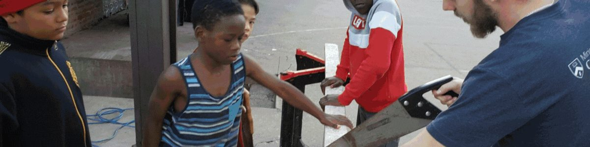
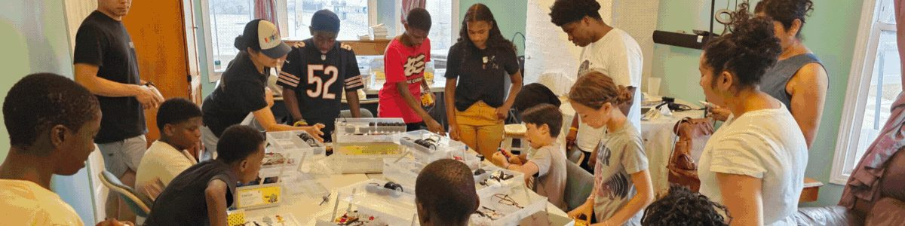
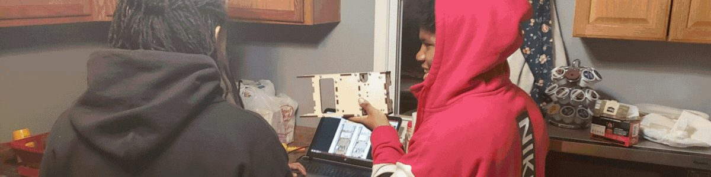
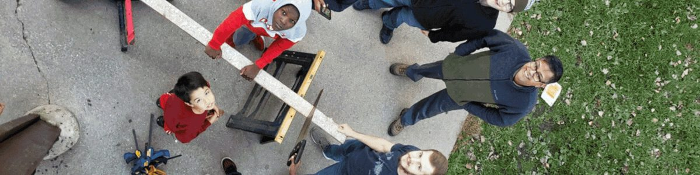
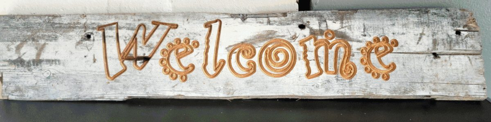

After school in Englewood, young people pick up real tools and learn a trade.
Englewood Works is an after-school club on Chicago’s South Side. Students measure, cut, carve, engrave, and finish projects they can hold in their hands, with instructors beside them who show them how.
Englewood Works is a 501(c)(3) nonprofit organization, EIN 87-0876283.

A workshop whose door opens after the last bell
Englewood Works meets after school at 672 W Marquette Road in Englewood. Students work in small groups at long tables with hand tools, cutting and engraving equipment, and materials for projects that start simple and grow with their skill.
Instructors teach each tool before a student uses it. Every student makes something to take home, and the pieces get more ambitious as the year goes on: a carved sign, an engraved mug, a box with joints that fit, a bench that holds weight.
The club is small on purpose. A student who is learning to cut straight or run a machine needs an adult within arm’s reach, and that is what the club provides.

Why a trade, and why here
Englewood has carried decades of disinvestment. Many of its young people have never held a saw, run a machine, or watched a project move from a drawing to a finished piece. The hours after school are the hours when they are most likely to be on their own and most at risk.
A trade changes the arithmetic of a young life. Carpentry, fabrication, finishing, and the skills that surround them lead to paid work without college debt, and the trades in Chicago are short of people to hire. More than that, a student who has built a bench or cut and engraved a sign knows something about themselves that no one can take away: they can make things.
That is the whole program. Give a young person a tool, a project, a patient adult, and a table to work at, and let the work do its teaching.
What a student does at Englewood Works
The path through the club runs in the same order for everyone, because each stage depends on the one before it.
- Learns the shopSafety rules, tool names, and how to measure and mark before anything gets cut.
- Makes a first pieceSomething small enough to finish in a session or two and carry home the same week.
- Takes on bigger buildsLonger projects, more tools, more responsibility, and often a team to work with.
- Carries it forwardOlder students help newer ones, and leave with skills, a record of their work, and adults who will vouch for them.

What your support makes possible
Englewood Works is a small organization running a single program, so a gift goes straight to the shop. Funding buys the tools and machines students learn on, the lumber, blanks, and finishes they turn into projects, the safety gear sized for young hands, and the instructors who know both the trades and the neighborhood.
A current need: a laser engraver and cutterWe are looking for a laser engraver and cutter that can handle round items such as mugs and tumblers, so students can take a product from design to finished piece. If your company makes, sells, or has retired this kind of equipment, we would welcome a conversation.
Foundations and corporate giving
Email Daniel Bair for a one-page program summary, the current budget, and our IRS and State of Illinois documentation for your due diligence.
Gifts by check
Make checks payable to Englewood Works and mail them to:
Englewood Works0N151 Windermere Rd, Unit 1004
Winfield, IL 60190
Equipment and materials
Tools, machines, lumber, and finishing supplies are welcome. Email first so we can confirm the fit and arrange delivery to the program site at 672 W Marquette Rd, Chicago.
Englewood Works is a 501(c)(3) nonprofit organization, EIN 87-0876283. Contributions are tax-deductible to the extent allowed by law, and every gift is acknowledged in writing.

Who runs it
Daniel Bair
Executive Director
Daniel has worked with young people in Englewood since 1998 and has directed neighborhood youth programs there since 2001. He lives on Chicago’s South Side and leads Englewood Works day to day. He answers his own email.

Come see the shop
The best way to understand Englewood Works is to stand in it on a club afternoon. Email Daniel to arrange a visit, ask a question, or request documents for a grant application.
Program site
672 W Marquette RdChicago, IL 60621
Mailing address
Englewood Works0N151 Windermere Rd, Unit 1004
Winfield, IL 60190